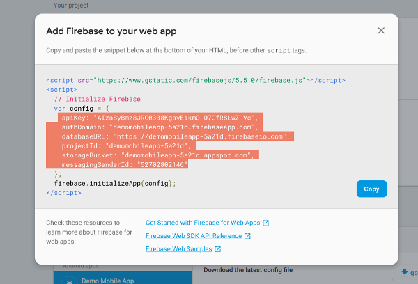
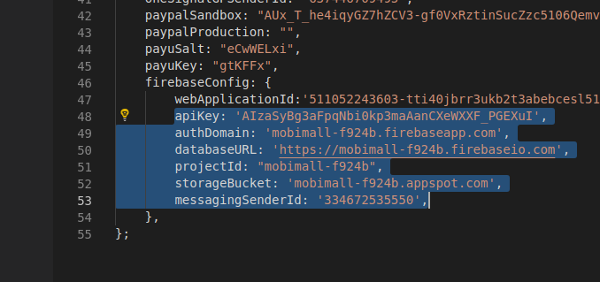
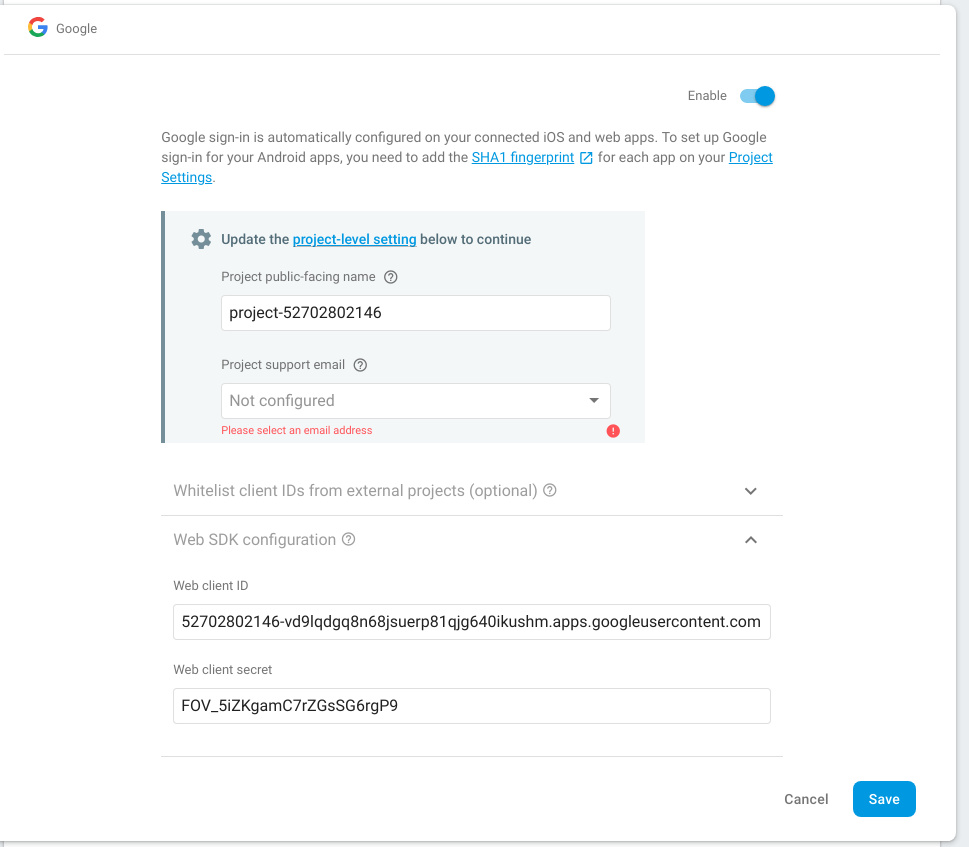

Introduction
The app is connected with Woocommerce (WordPress) using REST APIs, the following documentation will guide you through the process to connect the app with your Woocommerce Store.
Setting up your wordpress
-
Install Wordpress
Follow this link to get help in installing Wordpress:
https://codex.wordpress.org/Installing_WordPress -
Install and setup Woocommerce
Follow this link to get help in installing and setup Woocommerce:
https://docs.woocommerce.com/document/installation-2/ -
REST APIs for Woocommerce
To use the latest version of the REST API you must be using:
- WooCommerce 2.6+.
- WordPress 4.4+.
- You may access the API over either HTTP or HTTPS, but HTTPS is recommended where possible.
- IMPORTANT: If your website uses https protocol i.e your website url is https://www.example.com, you will need to generate
CONSUMER KEY and CONSUMER SECRET.
Go to
WooCommerce>Settings>Advanced>REST API>ADD Key. Copy both CONSUMER KEY and CONSUMER SECRET, these values will be required when we setup mobile application further in this document. You are not required to follow this step if your website uses http protocol. -
Setup Pretty permalinks in Settings > Permalinks so that the custom endpoints are supported. Default permalinks will not work.
- You also need to ensure that you web serve(Apache/Nginx) supports
HTTP Authorization Header. If you are using shared hosting and it has disabled the HTTP Authorization Header, then you need to enable it. To enable Authorization Header, please follow the following steps- Login to your shared hosting
- Visit file manager and go to the root directory of your website.
- You’ll find a .htaccess file, in this file after
RewriteEngine online add following two lines:RewriteCond %{HTTP:Authorization} ^(.*) RewriteRule ^(.*) - [E=HTTP_AUTHORIZATION:%1] - After this change, ensure that a section of your file looks as below:
RewriteEngine on RewriteCond %{HTTP:Authorization} ^(.*) RewriteRule ^(.*) - [E=HTTP_AUTHORIZATION:%1]
-
Plugins
-
mobile-ecommerce.zip (Required)
You will find the file named
mobile-ecommerce.zipinwordpress-pluginsfolder in the package you downloaded from envato. It provides multiple capabilities to our app and is neccessary to install. It enablesAuthorization Headerbased authentication for Woocommerce Rest APIs for websites that use http protocol. You need to install this plugin in your wordpress. If you are not aware of how to install the wordpress plugin, follow the following steps:- In your wordpress admin, go to Admin Menu > Plugins > Add New > Upload Plugin
- Choose the file
mobile-ecommerce.zip - Click on Install Now
- Click on Activate Plugin
-
WooCommerce PayU India (Optional)
You only need to install this plugin if you need to integrate PayUMoney payment gateway. Follow the following link to install and setup this plugin:
https://wordpress.org/plugins/woocommerce-payu-paisa/
-
Mobile App
-
Install Node.js
You must have Node.js installed on your system to begin building our app. Please follow the following step if nodejs is not installed on your system. If already done, you can skip this step
Note: Install Node.js version 8 or above on your system.Download the Node.js as per your operating system from https://nodejs.org/en/download/ To ensure that you have correct version of nodejs installed, from the command line issue the following command
node -vIf you see the string containing version number greater than 8, you are good to go. If you get
command not found error, that means nodejs is not properly installed on your system. You’ll need to troubleshoot the problem.You may be able to use node version lessser than 8 but we haven’t tested the app with these versions
-
Install ionic and cordova
In order to build our app you need to have installed ionic and cordova on your system. To install these packages issue the following command from command line:
npm install -g ionic@3.9.2 cordovaThis will install the ionic and cordova programs on your system. To ensure that you have successfully installed both the programs, issue following command from the command line
ionic -v && cordova -vIf version number gets printed on the console, you are good to go. If you get
command not found error, that means that these programs didn’t get properly installed on your system. You’ll need to troubleshoot the problem.Make sure you do not accidentally install ionic-v4(beta)
-
Connect the app with your woocommerce store
In order to connect the app with your woocommerce store, you need to make changes in the
src/app/app.config.ts. Update the values of the following variables- apiBase - Example Value:
http://www.example.com/wp-json/. This is the base url of woocommerce’s REST APIs. Few of the examples of apiBase values are as follows:- http://www.example.com/wp-json/
- http://subdomain.example.com/wp-json/
- http://www.example.com:8000/wp-json/
- http://www.example.com/subdirectory/wp-json/
Note: Replace www.example.com with your domain or IP address
-
consumerKey - Only set this if your website uses https protocol i.e your website url is like this https://www.example.com. This is the Consumer Key that you generated above while setting up REST APIs for Woocommerce. You may leave it blank if your website uses http protocol
-
consumerSecret - Only set this if your website uses https protocol https://www.example.com. This is the Consumer Secret that you generated above while setting up REST APIs for Woocommerce. You may leave it blank if your website uses http protocol
-
adminUsername - Only set this if your website uses http protocol http://www.example.com. This is the admin’s username of your wordpress website, that you use while loging in admin section. You may leave it blank if your website uses https protocol
-
adminPassword - Only set this if your website uses http protocol http://www.example.com. This is the admin’s password of your wordpress website, that you use while loging in admin section. You may leave it blank if your website uses https protocol
-
paypalProduction - Use your Paypal’s PRODUCTION_CLIENT_ID. For more info, please visit https://ionicframework.com/docs/native/paypal/
-
paypalSandbox - Use your Paypal’s SANDBOX_CLIENT_ID (you will need this only for testing purpose, otherwise you can leave it blank)
-
payuSalt: Your PayUMoney salt
-
payuKey: Your PayUMoney key
- appName: You can change the home screen title of the app by setting this value. Default: MOBIMALL
Please make sure that you understand that you need to enter values for consumerKey and consumerSecret if your website uses https. And if your website uses http, you need to enter values for adminUsername and adminPassword.
- apiBase - Example Value:
-
Social Login and Phone Authentication
*Note: This section is bit advance and novice users/developers may find it bit difficult to follow it. We have tried to make it as user/developer friedly as we can do. If you still face any issue you can contact us for support here or if you find it hard to implement, please purchase our installation service and we will do the complete setup for you.
*Note: Phone Authentication or some other functionality will not work on web and simulator. Kindly use real physical device for testing.
Before continuing make sure you have :-
- Firebase Account https://console.firebase.google.com
- Facebook App https://developers.facebook.com/apps
- SHA-1 fingerprint for the app https://cloud.google.com/solutions/mobile/mobile-firebase-app-engine-flexible#generating_a_sha-1_fingerprint_for_the_app
After following the steps given below make sure you have values of all the following keys with you:
- webApplicationId: Dummy value => 511052243603-tti40jbrr3ukb2t3abebcesl5sd0ql099.apps.googleusercontent.com
- apiKey: Dummy value => AIzaSyBg3aFpqNbi0kp3maA5SnCXeWXXF_PGEXuI
- authDomain: Dummy value => mobimall-f924zgs.firebaseapp.com
- databaseURL: Dummy value => https://mobimall-f924zgs.firebaseio.com
- projectId: Dummy value => mobimall-f924zgs
- storageBucket: Dummy value => mobimall-f924zgs.appspot.com
- messagingSenderId: Dummy value => 334672535551
- FACEBOOK APP ID
- FACEBOOK APP SECRET
(Do not use given Dummy values in your project, they will not work. They are just for illustration purpose.)
Firebase Setup-
Create a Firebase account or log into an existing account.
-
Click Add project. Follow the remaining setup steps and click Create project.

-
After the wizard provisions your project, click Continue.
-
In the Overview page of your project, click the Settings gear and then click Project settings.
-
Click Add Firebase to your Android app and follow the wizard

-
In Debug signing certificate SHA-1, enter the SHA-1 value you generated in the previous section.
-
Click Register app.
-
Download the google-services.json file and place it in root directory of app code.

-
Click Next in the Download config file section and follow the rest of the steps if required.
-
In the same section click on Add App but choose Add Firebase to your web app section this time
-
Copy all the highlated values and paste in app.config.ts as a value of respective key

- Your app.config.ts will look as follows

- Next click on Authentication and click on Sign-in method

-
Enable Phone Authentication and Google
-
When you will enable Google you will see Web SDK configuration section, click to expand it

- Copy the value of Web client ID, this is the value you will need to paste in webApplicationId in app.config.ts in app source code
Facebook Setup- Create an app at https://developers.facebook.com/apps

- Retrieve the App ID and App Name.

-
Then type in the following command in your Terminal, where
APP_IDandAPP_NAMEare the values from the Facebook Developer portal.ionic cordova plugin add cordova-plugin-facebook4 --variable APP_ID="123456789" --variable APP_NAME="myApplication" - In config.xml, replace the YOUR_FACEBOOK_APP_ID with your Facebook APP ID and YOUR_FACEBOOK_APP_NAME with your Facebook App Name in following code:
<config-file parent="/resources" target="./res/values/strings.xml"> <string name="fb_app_id">YOUR_FACEBOOK_APP_ID</string> <string name="fb_app_name">YOUR_FACEBOOK_APP_NAME</string> </config-file> - If you are building for Android, please follow this two steps also to complete the Facebook integration:
- https://developers.facebook.com/docs/facebook-login/android#5–associate-your-package-name-and-default-class-with-your-app
- https://developers.facebook.com/docs/facebook-login/android#6–provide-the-development-and-release-key-hashes-for-your-app
In summary, you will need to add Android platform to your Facebook App and enter the debug and release keys. Some users may face some difficulty in retreiving debug and release key, kindly go through the second link thoroughly.
cordova-plugin-googleplus-
Run the following command to add the support for google login
ionic cordova plugin add cordova-plugin-googleplus --save --variable WEB_APPLICATION_CLIENT_ID=mywebapplicationclientidYour mywebapplicationclientid will look something like this 511052243603-tti40jbrr3ukb2t3abebcesl5sd0ql099.apps.googleusercontent.com. We have already demonstrated above how to get this id.
Final ChecklistIn summary, make sure you have followed all these steps before proceeding
- Added project in firebase
- Added debug and release SHA-1 key in firebase
- Downloaded google-services.json file from firebase and placed it in root folder of the app source code
- Enabled Phone Authentication and Google in signin method in firebase
- Updated all the required values in app.config.ts
- Created Facebook app
- Added required platforms(Android/iOS) in your Facebook app and debug and releash SHA1 keys
-
Installed
cordova-plugin-googleplusandcordova-plugin-facebook4cordova pluginsionic cordova plugin add cordova-plugin-googleplus --save --variable WEB_APPLICATION_CLIENT_ID=mywebapplicationclientid ionic cordova plugin add cordova-plugin-facebook4 --variable APP_ID="123456789" --variable APP_NAME="myApplication"
Useful links- SHA-1 key related
- Google login
- Facebook login
-
Push Notifications
Your can configure our mobile app to recieve the push notifications when order’s status is updated from backend. Push notfications are integrated through One Signal. You will need an account of OneSignal before proceeding. Please follow the following steps:
- Create an account on OneSignal if you do not already have one.
- Create a new app in OneSignal
- Grab your OneSignal App ID, available in Keys & IDs
- Install OneSingal Wordrepss Plugin on your wordpress site
- Setup the wordpress plugin you just installed in previous step. This guide may help you https://documentation.onesignal.com/docs/accounts-and-keys#section-app-id
- In
src/app/app.config.tsset the following values:- oneSignalAppId: Your OneSignal App ID or just App ID, is the main identifier of your OneSignal app. Follow this instruction to retreive it https://documentation.onesignal.com/docs/accounts-and-keys#section-keys-ids
- oneSignalGPSenderId: A unique numerical value created when you create your Firebase project, available in the Cloud Messaging tab of the Firebase console Settings pane. The sender ID is used to identify each sender that can send messages to the client app.
Useful links- Instructions on how to setup OneSignal for Ionic https://documentation.onesignal.com/docs/ionic-sdk-setup
-
Other Installations
Ionic doesn’t bundle all of the tooling required to build an app, it relies on some additional SDKs and software provided by Apple and/or Google. It is good to read and follow the platform guides provided by Ionic to set up for each platorm you wish to work with Android Platform Guide iOS Platform Guide You can do this at a later time, but you’ll need to set up the platform tooling before you can preview or emulate an application on a simulator or device.
-
PayUMoney:
- Create an account on PayUMoney
- Setup Payumoney key and Salt in variables “payuKey” and “payuSalt” respectively in
src/app/app.config.tsfile.
-
PayPal
- Setup paypal by creating account here: https://www.paypal.com/in/webapps/mpp/account-selection?pros=1and add keys. How to Find the keys
- Setup PayPal sandbox id in variable “paypalSandbox” in the following file: src/app/app.config.ts
-
Deploy App
Deploying apps on Google Play Store and Apple App Store is out of the scope of this document. Kindly refer to this guide for further instructions.
Note: If you are unable to understand any topic or find any topic needs more elaboration. Please raise an issue ticket at this link https://opuslabs.freshdesk.com